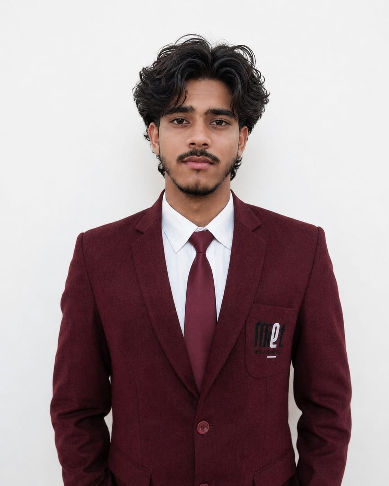

Hi, I'm Karan.
A BCA student at MIET Kumaon building practical skills in Python, Java, web development, app development and web designing.

More than a
student.
I'm focused on learning by doing, strengthening programming fundamentals, and preparing for real-world opportunities.
2025 – 2028
Web Development
HTML · CSS · JavaScript
Emerging Technologies
What I
work with.
Technical foundations and professional strengths I’m building throughout my BCA journey.
Python
Programming foundation and project work, including my Jarvis voice assistant.
Java
Programming concepts and object-oriented programming fundamentals.
Web Development
HTML, CSS and JavaScript fundamentals for responsive web experiences.
Problem Solving
Breaking problems into smaller steps and improving logical thinking.
Communication
Clear communication, teamwork and collaboration in academic environments.
Quick Learning
Curious mindset focused on learning new concepts and tools consistently.
Currently
learning.
The areas I’m actively exploring during my BCA journey.
Python
Building programming confidence and exploring practical automation and AI-oriented ideas.
Java
Strengthening programming fundamentals and OOP concepts.
Web Development
Learning how modern websites are structured, styled and made interactive.
App Development
Exploring fundamentals of useful and user-friendly applications.
Web Designing
Learning modern layouts, visual design and responsive user experiences.
Something
I built.
A beginner-level personal project from my current learning journey.
Jarvis
A beginner-level voice-based personal assistant built using Python. The project helped me explore speech recognition, voice interaction and command-based functionality.
- Implemented voice input and voice output.
- Worked with Python libraries for speech recognition and voice interaction.
- Implemented basic voice-command functionality.
- Exploring AI-based conversational capabilities.
My academic
journey.
Education details listed in my resume.
BCA
Bachelor of Computer Applications
MIET Kumaon
Intermediate
PCM · UBSE
Percentage: 64.4%
High School
UBSE
Percentage: 83.6%
One page.
My story.
A clean resume summary with education, skills and project work.
Karan Joshi — Resume
BCA 2nd Year Student · Java · Python · HTML · CSS · JavaScript · Jarvis Project
Let's
connect.
Open to internship opportunities, networking and conversations around software and web development.